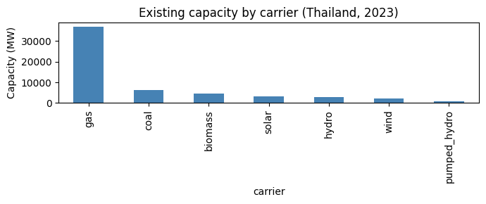
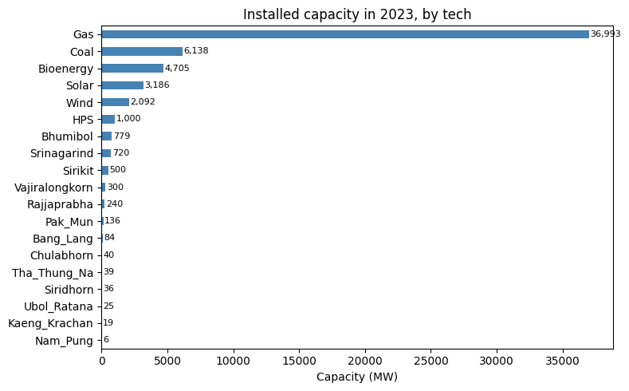
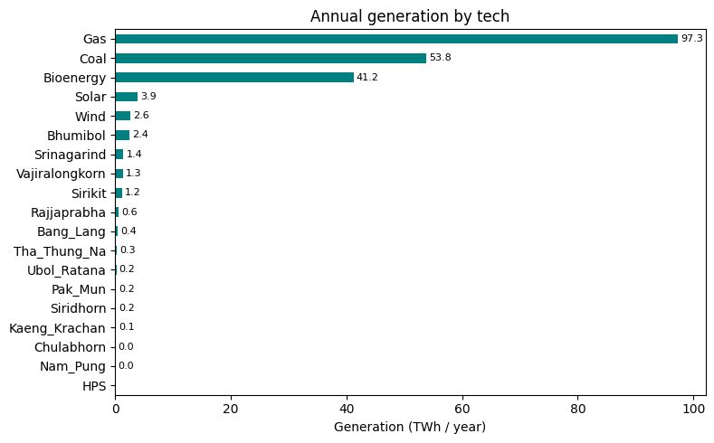
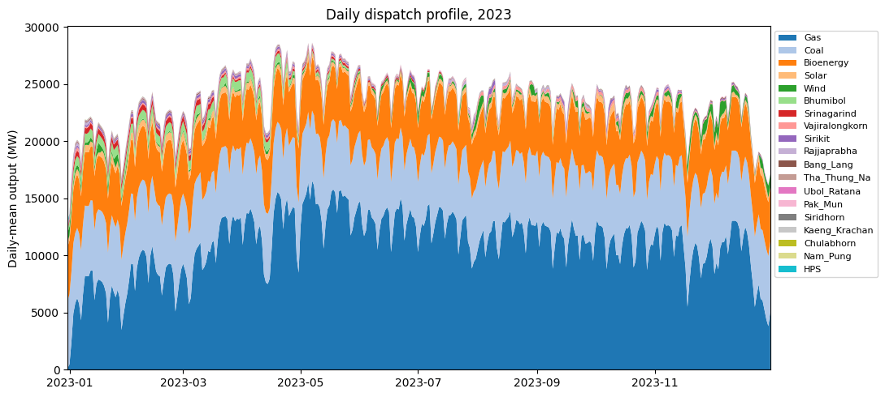
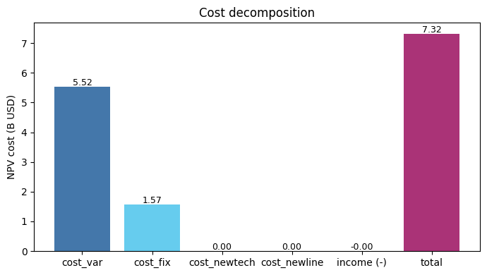

Thailand (single-zone, CEM)¶
A single-zone (Thailand) capacity-expansion run with 13 cascading Mekong-basin reservoirs – Bhumibol, Sirikit, Srinagarind, Vajiralongkorn, Rajjaprabha, etc. Migrated from the v1.4-era xlsx dataset to the v1.9 long-format CSV schema; all per-station reservoir physics (head, tailrace-discharge curves, forebay-volume curves) preserved.
Run the solve from the command line (the dataset is large – 1M+ variables – so a full solve takes ~30 min):
cd examples/thailand
python run.py
The cells below explore the dataset shape and read the result NetCDF. They run fast (no solve).
[1]:
import pathlib
# Walk up to find the example dir (containing config.json + input/).
this_dir = pathlib.Path.cwd()
while not (this_dir / 'config.json').exists() or not (this_dir / 'input').is_dir():
if this_dir == this_dir.parent:
raise RuntimeError(
'Could not locate the example dir; run from inside '
'examples/thailand/.'
)
this_dir = this_dir.parent
INPUT = this_dir / 'input'
print(f'Example dir: {this_dir}')
print(f'Input: {INPUT}')
Example dir: /Users/energy/01-doing/PREP-SHOT-tutorial/PREP-SHOT/examples/thailand
Input: /Users/energy/01-doing/PREP-SHOT-tutorial/PREP-SHOT/examples/thailand/input
Existing fleet (2023)¶
Thailand’s installed capacity in the start year, with Large Hydropower allocated across the 13 reservoir techs by their rated capacity.
[2]:
import pandas as pd
import matplotlib.pyplot as plt
%matplotlib inline
fleet = pd.read_csv(INPUT / 'tech_existing.csv')
registry = pd.read_csv(INPUT / 'tech_registry.csv')
merged = fleet.merge(registry[['tech', 'carrier']], on='tech')
by_carrier = merged.groupby('carrier')['capacity'].sum().sort_values(ascending=False)
fig, ax = plt.subplots(figsize=(7, 3))
by_carrier.plot.bar(ax=ax, color='steelblue')
ax.set_ylabel('Capacity (MW)')
ax.set_title('Existing capacity by carrier (Thailand, 2023)')
fig.tight_layout()
plt.show()
by_carrier.round(0)

[2]:
carrier
gas 36993.0
coal 6138.0
biomass 4705.0
solar 3186.0
hydro 2925.0
wind 2092.0
pumped_hydro 1000.0
Name: capacity, dtype: float64
Per-station hydropower characteristics¶
Each reservoir is modeled with its own head, capacity, and operational bounds – the feature that distinguishes PREP-SHOT from PyPSA / GenX.
[3]:
head = pd.read_csv(INPUT / 'reservoir_head.csv')
cap = pd.read_csv(INPUT / 'reservoir_capacity_max.csv')
merged = (
head[['tech', 'head']]
.merge(cap[['tech', 'capacity_max']], on='tech')
.sort_values('capacity_max', ascending=False)
)
merged.round(1)
[3]:
| tech | head | capacity_max | |
|---|---|---|---|
| 0 | Bhumibol | 154.0 | 779.2 |
| 10 | Srinagarind | 140.0 | 720.0 |
| 1 | Sirikit | 113.6 | 500.0 |
| 12 | Vajiralongkorn | 92.0 | 300.0 |
| 9 | Rajjaprabha | 94.0 | 240.0 |
| 4 | Pak_Mun | 17.0 | 136.0 |
| 7 | Bang_Lang | 85.0 | 84.0 |
| 2 | Chulabhorn | 70.0 | 40.0 |
| 11 | Tha_Thung_Na | 30.0 | 39.0 |
| 5 | Siridhorn | 42.0 | 36.0 |
| 6 | Ubol_Ratana | 32.0 | 25.2 |
| 8 | Kaeng_Krachan | 58.0 | 19.0 |
| 3 | Nam_Pung | 41.0 | 6.3 |
Inspect a solve (after running python run.py)¶
Once you’ve run the CLI command above and it has written output/baseline.nc, the cell below opens it. Skip if you haven’t run the solve yet.
[4]:
import xarray as xr
nc_path = this_dir / 'output' / 'baseline.nc'
if not nc_path.exists():
print(f'No NetCDF at {nc_path}. Run `python run.py` from {this_dir} first.')
else:
# Try netCDF4 then h5netcdf -- the .nc file is netCDF4-classic and
# may not be readable by every backend on every platform.
ds = None
for engine in ('netcdf4', 'h5netcdf'):
try:
ds = xr.open_dataset(nc_path, engine=engine)
break
except Exception as exc:
last_err = exc
if ds is None:
print(f'Could not open {nc_path} (last error: {last_err}). '
f'Falling back to baseline.xlsx in the cells below.')
else:
print(f'Total cost (NPV): ${float(ds.cost):,.0f}')
print(f'Variables: {sorted(ds.data_vars)[:6]} ...')
Total cost (NPV): $7,317,497,191
Variables: ['carbon', 'carbon_breakdown', 'charge', 'cost', 'cost_fix', 'cost_fix_breakdown'] ...
Common plots from a solved baseline¶
Once python run.py writes output/baseline.nc (and baseline.xlsx), the cells below produce four standard diagnostics:
Installed capacity by technology
Annual generation mix by technology
Daily dispatch profile (stacked area over the year)
Cost breakdown (NPV decomposition)
The cells read from the .xlsx mirror so you don’t need a working netCDF4 build to view results.
[5]:
OUT = this_dir / 'output' / 'baseline.xlsx'
if not OUT.exists():
raise FileNotFoundError(
f'No solved baseline at {OUT}. Run `python run.py` from {this_dir} first.'
)
xl = pd.ExcelFile(OUT)
print('Sheets:', xl.sheet_names[:8], '...')
Sheets: ['trans_export', 'gen', 'install', 'carbon', 'charge', 'cost_var_breakdown', 'cost_fix_breakdown', 'cost_newtech_breakdown'] ...
Installed capacity¶
Single-year, single-zone, so capacity reduces to one horizontal bar per technology.
[6]:
inst = pd.read_excel(xl, 'install')
by_tech = (inst.groupby('tech')['install']
.sum().sort_values(ascending=True))
fig, ax = plt.subplots(figsize=(8, 5))
by_tech.plot.barh(ax=ax, color='steelblue')
ax.set_xlabel('Capacity (MW)')
ax.set_ylabel('')
ax.set_title('Installed capacity in 2023, by tech')
for i, v in enumerate(by_tech.values):
ax.text(v + 100, i, f'{v:,.0f}', va='center', fontsize=8)
plt.tight_layout()
plt.show()

Annual generation mix¶
Annual TWh per technology. Note how much of the load is met by gas and coal — the dataset has no carbon cap, so the dispatch is driven purely by variable cost.
[7]:
gen = pd.read_excel(xl, 'gen')
by_tech_twh = (gen.groupby('tech')['gen']
.sum().div(1e6).sort_values(ascending=True))
fig, ax = plt.subplots(figsize=(8, 5))
by_tech_twh.plot.barh(ax=ax, color='teal')
ax.set_xlabel('Generation (TWh / year)')
ax.set_ylabel('')
ax.set_title('Annual generation by tech')
for i, v in enumerate(by_tech_twh.values):
if v > 0.01:
ax.text(v + 0.5, i, f'{v:,.1f}', va='center', fontsize=8)
plt.tight_layout()
plt.show()

Daily dispatch profile¶
Aggregate hourly generation into daily means and stack by technology to see seasonal dynamics. Hydro output rises with the monsoon; gas plays the swing role; renewables are roughly flat.
[8]:
# gen[hour=1..8760, tech] -> reshape to (day, tech) and stack.
gen_pivot = gen.pivot_table(index='hour', columns='tech',
values='gen', aggfunc='sum').fillna(0)
gen_pivot.index = pd.to_datetime('2022-12-31') + pd.to_timedelta(gen_pivot.index, unit='h')
daily = gen_pivot.resample('D').mean() # MW (daily-mean output)
tech_order = (gen_pivot.sum(axis=0).sort_values(ascending=False).index.tolist())
daily = daily[tech_order]
fig, ax = plt.subplots(figsize=(11, 5))
ax.stackplot(daily.index, daily.T.values, labels=tech_order,
colors=plt.cm.tab20.colors)
ax.set_ylabel('Daily-mean output (MW)')
ax.set_title('Daily dispatch profile, 2023')
ax.legend(loc='upper left', bbox_to_anchor=(1.0, 1.0), fontsize=8, ncol=1)
ax.margins(x=0)
plt.tight_layout()
plt.show()

Cost breakdown¶
All costs are NPV-discounted to the start year. With no expansion (carbon cap is inf in this scenario), cost_newtech and cost_newline are 0 — the model only pays operating costs on the existing fleet.
[9]:
components = ['cost_var', 'cost_fix', 'cost_newtech', 'cost_newline']
values = [pd.read_excel(xl, c).iloc[0, 1] / 1e9 for c in components]
income = pd.read_excel(xl, 'income').iloc[0, 1] / 1e9
total = pd.read_excel(xl, 'cost').iloc[0, 1] / 1e9
labels = components + ['income (-)', 'total']
vals = values + [-income, total]
colors = ['#4477aa', '#66ccee', '#228833', '#ccbb44',
'#ee6677', '#aa3377']
fig, ax = plt.subplots(figsize=(7, 4))
ax.bar(labels, vals, color=colors)
for i, v in enumerate(vals):
ax.text(i, v + 0.05, f'{v:,.2f}', ha='center', fontsize=9)
ax.set_ylabel('NPV cost (B USD)')
ax.set_title('Cost decomposition')
ax.axhline(0, color='black', linewidth=0.5)
plt.tight_layout()
plt.show()

Where to next¶
Quickstart notebook – the canonical 5-minute walkthrough on a smaller 3-zone synthetic dataset.
Southeast Asia notebook – a 5-country regional case with 57 reservoirs.
Model Inputs/Outputs – every file in
input/documented.